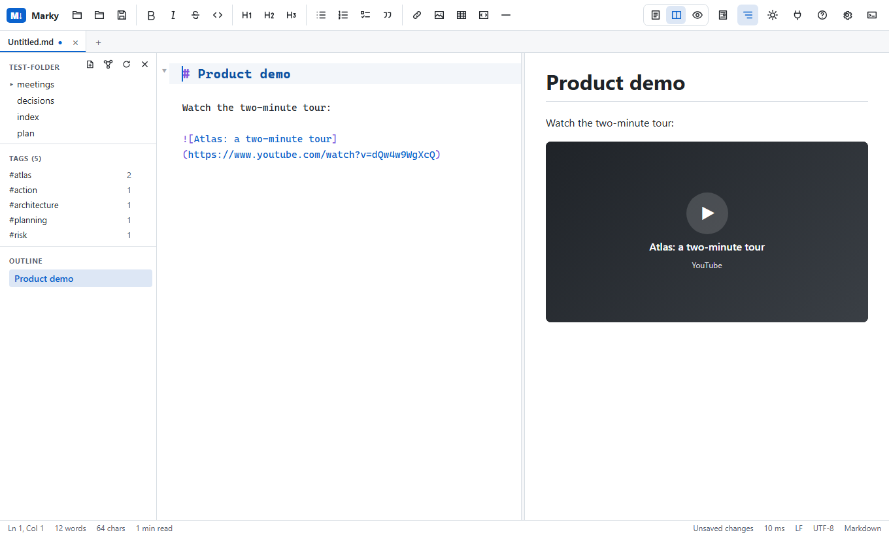
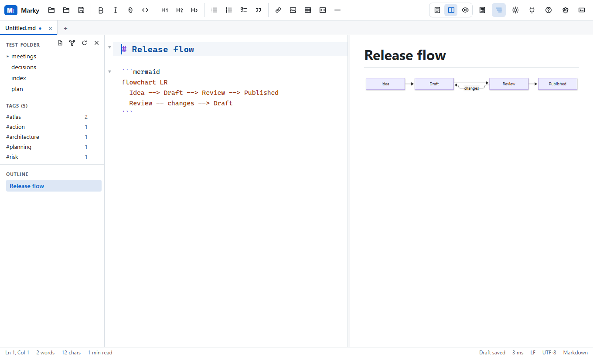
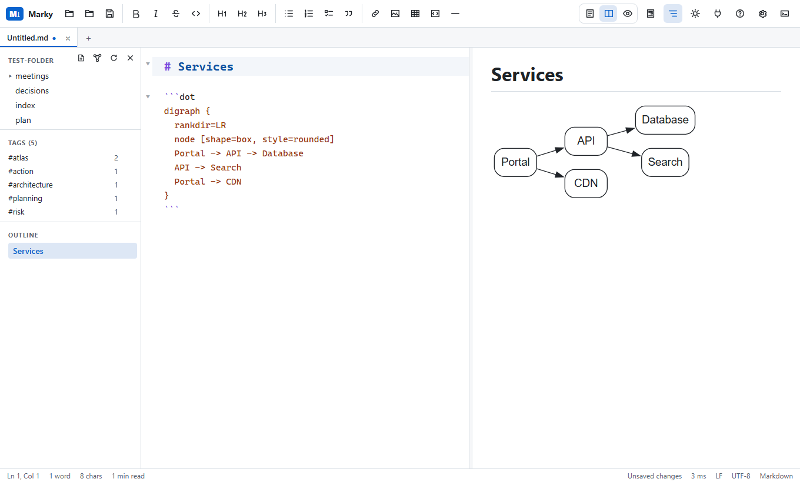
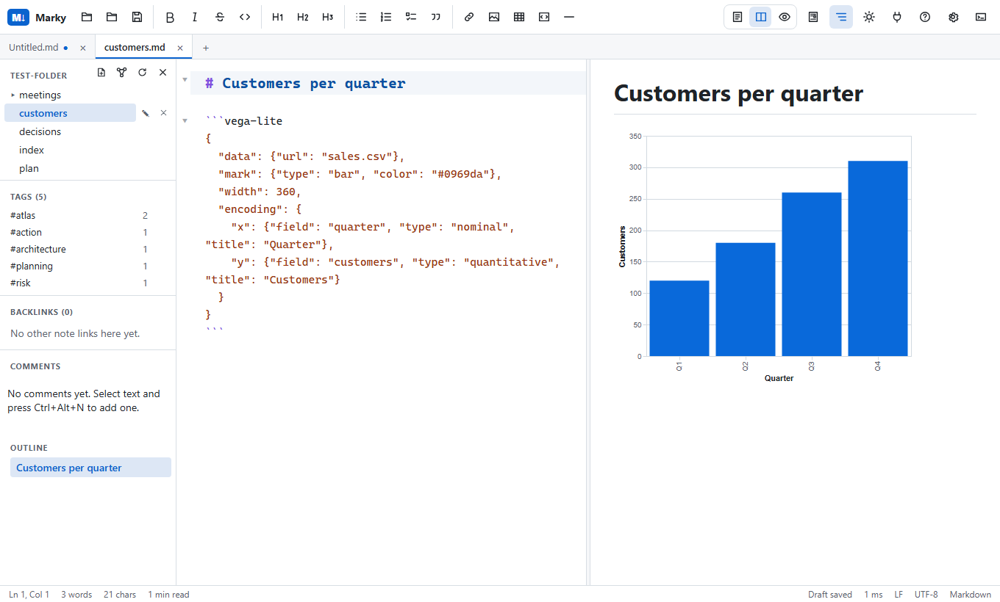
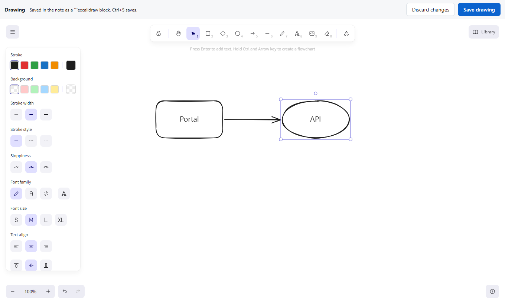
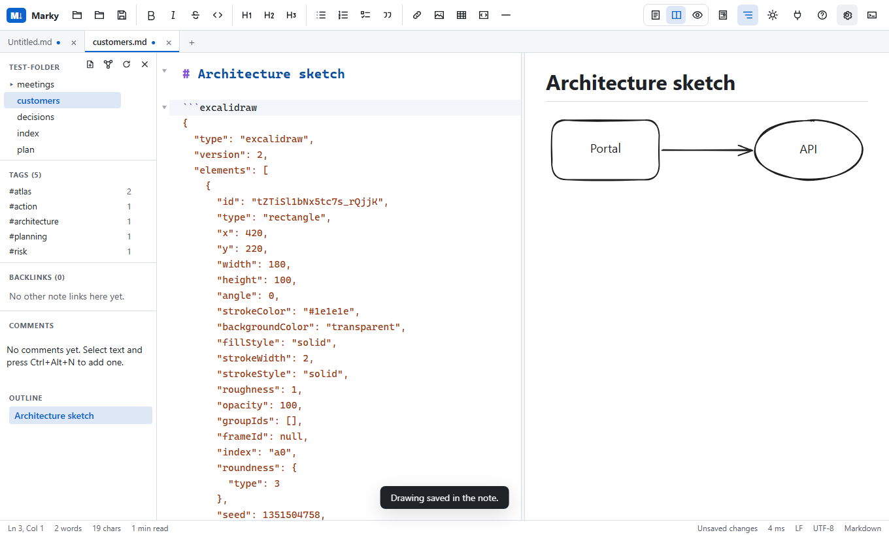
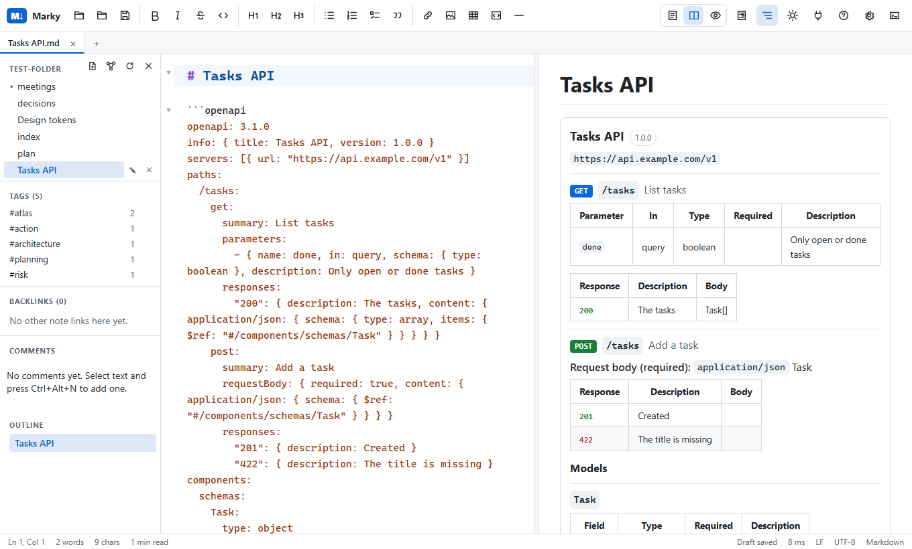
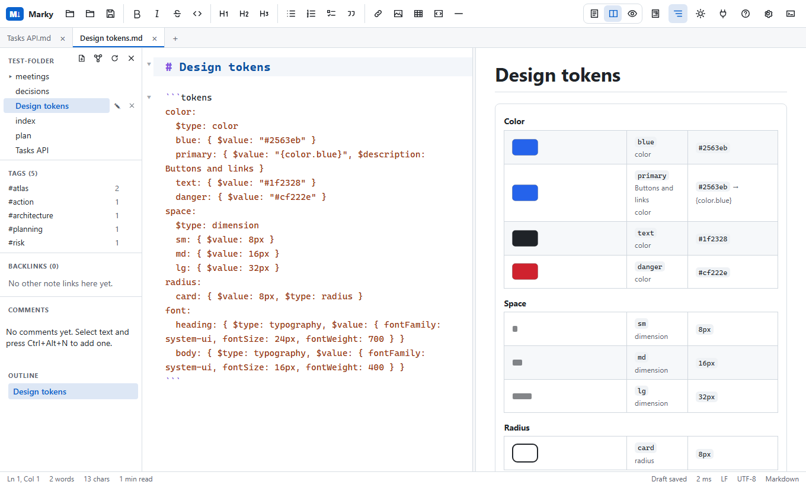

7. Pictures, video and diagrams
Pictures
 shows a picture. The description (alt text) is read to screen-reader users and shown if the picture can't load.
- Paste or drop a picture into the editor. In a folder it's saved in
assets/next to the note; otherwise it's put in the note itself (up to 2 MB). Desktop: a saved note outside a folder also gets anassets/folder next to it. - Size:
{width=50%}(of the page width) or{width=320}(pixels), or Image size… with the cursor on a picture. - Make smaller: Optimize image… saves a smaller WebP copy and updates the link.
- Pictures from the internet load by default. Switch off Settings › Preview › Load images from the internet so a note can't track you through them.
Videos and sound
Put a YouTube or Vimeo link in a picture, or on a line of its own:

https://vimeo.com/76979871
The preview shows a ▶ play box. Nothing is loaded from YouTube or Vimeo until you click it; then the video plays from youtube-nocookie.com or player.vimeo.com, which don't set tracking cookies before you play. A start time in the link (&t=42s) is kept.

Video and sound files get a player: , .webm, .mov, .mp3, .m4a, .wav, .ogg, .flac.
Exports (PDF, Word) and other Markdown apps see a link to the video.
Diagrams
A code block with the right language is drawn as a diagram. All of these except PlantUML are drawn on your own computer, follow the light or dark theme, and go into HTML, PDF, Word and PowerPoint as pictures. Mermaid, Graphviz, charts, drawings and math can be switched off in Manage plugins….
Mermaid
```mermaid
flowchart LR
Idea --> Draft --> Review --> Published
```
Flowcharts, sequence, class, state and entity-relationship diagrams, Gantt charts, pie charts, mind maps, timelines and C4. See mermaid.js.org.

Graphviz
```dot
digraph {
rankdir=LR
Idea -> Draft -> "Published"
Draft -> Idea [label="rework"]
}
```
The DOT language of Graphviz: good for dependency graphs and state machines. A mistake shows Graphviz's message instead of the graph.

Charts (Vega-Lite)
```vega-lite
{
"data": {"values": [{"q": "Q1", "n": 3}, {"q": "Q2", "n": 7}, {"q": "Q3", "n": 5}]},
"mark": "bar",
"encoding": {
"x": {"field": "q", "type": "nominal", "title": "Quarter"},
"y": {"field": "n", "type": "quantitative", "title": "Customers"}
}
}
```
Bars, lines, areas, points, pie charts and more: see the Vega-Lite examples. The data can also come from a file in the folder: "data": {"url": "sales.csv"} (CSV, TSV or JSON), so a chart updates when the file does. Addresses on the internet are refused, so opening a note never tells a server about it.

Drawings (Excalidraw)
Insert or edit a drawing… opens a full-window drawing board (Excalidraw): shapes, arrows, text and freehand drawing with a hand-drawn look. Save drawing (or Ctrl+S) puts it into the note as an ```excalidraw block. With the cursor in that block, the same command opens it again.

A drawing kept in its own .excalidraw file (from excalidraw.com, Obsidian or another app) shows with .

Text in drawings uses your system's font in the preview, not Excalidraw's hand-writing font.
C4 models (Structurizr) and PlantUML
```structurizrblocks (the Structurizr DSL) are drawn as C4 diagrams on your computer; choose the view with```structurizr view=Containers. See Architecture documentation.```plantumlblocks are drawn by a PlantUML server you choose in Settings › Preview (the public one, Kroki, or one on your own computer). This is off by default, because the diagram's text goes to that server.
API documents and design tokens
A ```openapi block (or swagger) holds an OpenAPI 3 or Swagger 2 document, in YAML or JSON. The preview shows it as readable API documentation: the title, version and servers, then each endpoint with its method, path, parameters, request body and responses, and the models with their fields. Type /api for a small example.

A ```tokens block holds design tokens: the W3C Design Tokens format ($value, $type, aliases such as {color.blue}) or simply names and values. The preview shows colour swatches, bars for sizes and spacing, rounded corners for radii, and type samples for fonts. Type /tokens for an example.

Both are drawn from the text only: nothing is fetched or run, and a value can never become markup. They go into HTML and PDF exports as they look in the preview, and into Word as a picture.
Math
$E = mc^2$ inline, or a block:
$$
\int_0^1 x^2\,dx = \frac{1}{3}
$$
Math is typeset with KaTeX and also given to screen readers as MathML. $5 and $10 stays plain text.